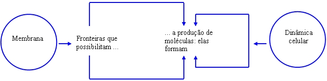
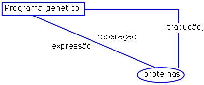
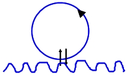
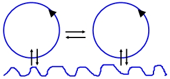
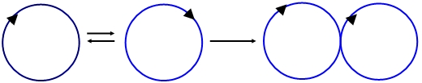
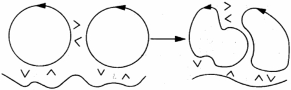

|
Ser Humano: o Contributo
da Autopoiesis
1. ANIMAL RACIONAL
O Humano é, para Aristóteles, por definição, um ser racional. Essa definição tem a ver com o “intelecto da alma – o intelecto com que a alma raciocina e ajuíza” (1999: 230), o intelecto agente, em virtude do qual se dá o conhecimento propriamente humano. O intelecto agente é, segundo Aristóteles, “separável do corpo, sem mescla e impassível, sendo como é, acto, pela sua própria entidade” (1999: 234), sendo que contém autêntica força criadora de si (ao invés do Intelecto Passivo, no qual os “phantasmata”, as representações sensíveis, se criam por virtude da inscrição das percepções sensíveis). É o intelecto agente o que autenticamente nos caracteriza como humanos (racionais) e nos conduz à condição de humanos, na medida em que é susceptível de elaborar as suas próprias representações (embora não idealisticamente mas com base no material das impressões dadas no intelecto passivo, os “phantasmata). É certo que Aristóteles não deixa de elaborar uma elaborada psicologia das “faculdades apetitivas”, inferiores e superiores, sendo que enquanto as primeiras nos unem aos outros animais, as segundas constituem uma espécie de direcção especifica e superiormente humana das paixões (1999: 246-248). Mas, se outra dúvida houvesse, é na economia do pensamento aristotélico que a Razão, enquanto fundamento do humano, se desvela com toda a clareza. Na “A Política”, de Aristóteles, por exemplo (um tratado que se apresenta de modo largamente indutivo), são as noções de fundamento, razão e totalidade aquelas que sobredeterminam toda a investigação. Particularmente, Aristóteles não tem dúvida em subordinar o corpo à alma (como fundamento), isto é, as emoções às razões, para a determinação das suas conclusões (Ross, 1987: 242). Assim sendo, a razão é que conduz todo o ordenamento social já que é ela que melhor convém ao homem, às suas necessidades gregárias e, mais amplamente, aos seus fins humanos, que se realizam na pólis e na consecução do bem moral enquanto correspondência com a ordem natural (no que, aliás, Aristóteles se aproxima de Platão). De facto, para Aristóteles a natureza humana é pensada num horizonte teleológico de realização de fins. Ou seja, Aristóteles perguntava-se quais eram os fins que o Homem devia cumprir em ordem à sua integral realização, i.e., em ordem à actualização da sua natureza de homens. Eudaimonia é o nome do fim a que o homem aspira em ordem à sua integral realização. A eudaimonia, ou felicidade, humana há-de realizar-se, então, no desenvolvimento daquelas actividades conformes à realização/actualização da natureza humana e o critério para definir esta actividade há-de ser “o tratar-se de uma actividade auto-suficiente, que constitua um fim em si mesma e que corresponda à faculdade mais especificamente humana e mais perfeita de quantas possui o homem” (Martínez in Aristóteles, 1999: 66). Assim, sabendo-se que a qualidade mais especificamente humana é aquela que corresponde ao intelecto agente, facilmente se conclui que a eudaimonia aristotélica consiste, como o refere no “Ética a Nicómaco”, na actividade intelectual puramente teorética, não instrumental, em busca da verdade. O Homem é, pois, um animal racional e separa-se dos outros animais exactamente em função de subsistir em si aquela função inteligível pela qual não só capta mas transforma racionalmente os dados sensíveis (o intelecto agente), sendo que a sua eudaimonia enquanto realização/actualização da sua natureza consiste na busca teorética, racional, da verdade. Há, porém, pelo menos outro caminho no sentido da interpretação do caracteristicamente Humano. O próprio Aristóteles, aliás, indica esse caminho, sem, porém, o percorrer. No De Anima, como vimos acima, esboça-se uma psicologia que subordina a razão às emoções (ou aos desejos). Veja-se esta passagem: “Ora bem, a observação mostra que o intelecto não se move sem desejo: a volição é, desde logo, um tipo de desejo e quando alguém se move em virtude do raciocínio é porque se move em virtude de uma volição” (1999: 247). Pode concluir-se, então (embora Aristóteles não tenha seguido por aí), que o raciocínio é uma espécie de desejo, que há um desejo raciocinante. Este desejo, aliás, tem, para o mesmo Aristóteles, uma natureza ou uma fonte claramente biológica ou corporal: “Quanto ao órgão com que se move o desejo, trata-se já de algo corporal e, portanto, deverá estudar-se juntamente com as funções que são comuns ao corpo e à alma” (Ibid.: 248). Teríamos, neste caso, que antes da Razão com toda a sua maquinaria estrutural, estaria o corpo e o desejo. Poder-se-á dizer que este caminho não tem peso suficiente na antropologia aristotélica, o que é integralmente verdade. Não deixa de ser significativo, no entanto, que este caminho tenha sido indicado por Aristóteles, como que abrindo uma brecha no seu próprio sistema e, digo eu, na tradição. É por essa brecha que quero ir, começando, antes de tudo o mais, por mostrar como é que o biológico se constitui e como é que, a partir daí, o humano pode desembocar noutra natureza, segundo a particular perspectiva de Humberto Maturana e Francisco Varela.
2. A ontologia do biológico
2.1. ORGANIZAÇÃO E ESTRUTURA
Quando é que, então, se pode dizer que um ser é um ser vivo? Quais são os critérios do “vivo”? Ao longo da história da Biologia os critérios de definição do vivo foram evoluindo. Essa evolução vai desde a ideia segundo a qual a vida definir-se-ia por uma determinada composição química, pelo movimento ou, mais contemporaneamente, pela reprodução, ou até pela enunciação de uma lista de propriedades que seja a síntese daquelas características, lista que, porém, tem o indesejável problema de nunca se saber quando está completa. A resposta de Maturana e Varela ao problema da definição do vivo vai passar por uma ruptura relativamente à tradicional definição do ser vivo em função de uma lista de propriedades. O seu caminho vai ser o de sugerir uma definição de vivo em termos não das suas propriedades mas da sua organização. A sua pergunta será, então: que relações ou organização tem que caracterizar os seres vivo para que estes se possam definir como tal? A aposta de Maturana e Varela vai ser centrada na organização ou na unidade[1] do ser vivente, em contracorrente relativamente ao pensamento darwinista e mendeliano que apostam sobretudo na compreensão dos mecanismos de evolução da espécie, da origem dos componentes das unidades vivas e na relevância dos elementos históricos na determinação dos elementos estruturais (Varela, 1989: 38). Pelo contrário, agora a aposta é a de que, para além da diversidade dos seres vivos, há uma organização que lhes é comum e que os define como sistemas muito particulares. O objectivo deste novo caminho da definição do vivo é, em grande parte, o de mostrar que tanto as correntes evolucionistas como teleológicas da explicação do vivo esqueceram, ou até contribuíram para esconder, pelo menos até agora, a natureza organizativa das unidades vivas, cuja natureza sistémica e organizacional se mantém para além de toda a mudança. A organização do vivo será explicada por Maturana e Varela em termos estritamente mecanicistas. Isto quer dizer que rejeitam qualquer tipo de princípio ou força exterior ao universo da física. Uma máquina é definida como um sistema material formado por certos componentes capazes de estabelecer certas relações que determinam na unidade as relações e as transformações possíveis desses mesmos componentes. No entanto, o tipo específico de componentes não tem qualquer relevância para o que a máquina é, bem como as suas características particulares, com excepção daquelas que são específicas para as relações e mudanças dentro do sistema. Assim, a organização de uma máquina é definida em função das relações que determinam a dinâmica das interacções e transformações dos seus componentes, representativas dos seus estados possíveis (Maturana e Varela, 1972: 15-16). Os componentes de uma máquina podem ser variados e ainda assim satisfazerem do mesmo modo o conjunto de relações que definem a sua organização. Assim sendo, uma máquina, ou um sistema, pode constituir-se segundo estruturas diferentes, já que a sua organização não depende das características dos componentes. Uma entidade sistémica, uma unidade ou uma máquina, define-se, então, pela sua organização, quer dizer, pelo conjunto de relações entre os componentes que constituem a sua forma num determinado momento, independentemente das mudanças dos componentes, e essa organização é que define a sua identidade. Uma unidade pode manter a sua identidade mesmo em presença de mudanças estruturais, ou seja, mesmo em presença de mudanças relativamente aos seus elementos, desde que a sua organização seja mantida. Assim, quando se fala de organização de uma máquina não se está a dizer nada relativamente às características dos seus componentes em concreto. A organização define apenas as relações que se devem estabelecer para que aquela máquina possa constituir uma unidade. Varela e Maturana dão-nos o exemplo seguinte que, tendo em conta o nível de abstracção das definições de máquina, de organização e de estrutura, penso justificar-se: “Assim, por exemplo, num autoclismo, a organização do sistema de regulação do nível de água consiste nas relações entre um aparato capaz de cortar o fluxo de entrada de água e outro aparato capaz de detectar o nível da água. A unidade autoclismo inclui um sistema misto de plástico e metal, compreendendo uma bóia e uma válvula de entrada. Essa estrutura particular, todavia, poderia ser modificada substituindo-se o plástico por madeira, sem se alterar o facto de que ela seria ainda um autoclismo” (1990: 40). O que se conclui é que ainda que várias estruturas diferentes possam realizar virtualmente a mesma máquina, esta só poderá ser efectivamente realizada na presença de elementos concretos num espaço dado, elementos esses capazes de produzirem a organização que define a máquina em causa. Sendo assim, o que uma máquina é nada tem a ver com a sua natureza física, já que esta se define m termos puramente formais, ainda que a sua realização efectiva exija determinados elementos. O mesmo se passa, aliás, com uma “Máquina de Turing”, em que a sua definição, ou organização enquanto sistema, nada tem a ver com o tipo particular de máquina a realizar. Ora, para Maturana e Varela, os seres vivos são, exactamente, máquinas. Mais especificamente, máquinas biológicas. E, como máquinas, aquilo que os define nada tem a ver com a sua estrutura, ou seja, com os elementos materiais e físicos que os constituem e nos quais se realizam, mas somente com a sua organização. Em função destas premissas, Varela apresenta-nos três consequências decisivas para a explicação dos sistemas biológicos: 1) Todas as explicações de sistemas biológicos devem pôr em relevância dois aspectos complementares da sua constituição: por um lado aquele que diz respeito à sua organização (ou seja, aquele que pretende esclarecer a natureza das relações dinâmicas específicas que constituem ou definem aquele sistema), por outro, aquele que diz respeito à sua estrutura (ou seja, aquele que diz respeito aos elementos que o constituem e como se relacionam no seio da organização). 2) Todos os sistemas biológicos podem, a prazo, ser analisados em função dos seus elementos físicos, exactamente como os sistemas físicos não biológicos, ainda que esses elementos físicos não sejam suficientes para determinar a natureza da sua organização biológica. 3) No que diz respeito à biologia, a consequência é a de ser necessário analisar este tipo de máquinas que são os sistemas vivos e as transformações que elas podem sofrer ao longo do tempo. Pode concluir-se que, ainda mais fundamentalmente, a biologia não pode ser reduzida à física nem deduzida dela, uma vez que a física constitui a estrutura do sistema biológico, mas o sistema não depende, de per si, daquilo que fisicamente o constitui (Varela, 1989: 43 - 44)[2].
2.2. MÁQUINAS AUTOPOIÉTICAS
O que se pretende agora é mostrar qual é a organização específica dos sistemas vivos que os define enquanto tais. Os sistemas vivos constituem um tipo específico de sistema que se caracteriza por se produzir continuamente a si mesmo. Os sistemas vivos são, então, autopoiéticos, ou seja, definem-se em termos de uma organização autopoiética, uma organização que se produz a si mesma. Os seres vivos são os únicos seres em que compete à sua organização a contínua autoprodução, e é isto que os define. Nas palavras de Varela, “um sistema autopoiético é organizado como uma rede de processos de produção de componentes que (a) regeneram continuamente pelas suas transformações e interacções a rede que os produziu, e que (b) constituem o sistema enquanto unidade concreta no espaço onde existe, especificando o domínio topológico onde se realiza como rede” (1989: 45). Como não é difícil de perceber, o conceito de autopoiesis tem enormes analogias com o de homeostasia (mecanismo pelo qual uma organização faz intervir circuitos de regulação através dos quais os elementos são informados dos efeitos do seu próprio funcionamento, permitindo ajustá-lo de modo adequado ao interesse da estabilização da organização). Em parte, o que Maturana e Varela fizeram foi pegar nesse conceito e usá-lo de modo sistemático no contexto das relações internas da organização ou do sistema, afirmando que é com base no mecanismo da homeostáse que ocorre a criação da identidade formal do sistema e acrescentando-lhe a autoprodução de si mesmo enquanto organização. Ou seja, de modo homeostático e autoprodutivo, as máquinas autopoiéticas definem e especificam continuamente a sua própria organização. Durante muito tempo, e ainda hoje, na lista das definições do “vivo”, a reprodução aparece como aquela mais exemplarmente característica. Entende-se que a reprodução é um processo que ocorre apenas num tipo de sistemas a que chamamos biológicos e por isso é que eles o são biológicos. Neste contexto, chamamos reprodução ao processo pelo qual ocorre a produção de uma nova unidade, a partir da primeira, que coincide com a antiga na sua organização básica. Dois elementos são então determinantes para que aconteça a reprodução: a existência de uma unidade e de um processo reprodutivo. No entanto, isto tem a consequência de que a reprodução é exterior à definição da organização sistémica, ou seja, de que se a unidade precede, como tem que preceder, a reprodução, este elemento não lhe é intrínseco nem característico. Assim sendo, como já se entreviu, a reprodução não é um elemento constitutivo das máquinas biológicas, quer dizer, não faz parte da sua organização. No fundo, lembram-nos Maturana e Varela, “se falamos de reprodução do ser vivo, estamos implicitamente a dizer que este deve poder existir sem se reproduzir. Basta pensarmos no caso da mula para nos darmos conta de que isto deve ser assim” (1990: 50). A análise da organização celular permitirá, de modo simples, a explicação daquilo que é próprio da organização autopoiética. Assim, inicialmente, desde uma miscelânea molecular destaca-se uma célula a partir da definição e fixação de fronteiras relativamente a tudo aquilo que lhe aparece como diferente, quer dizer, diferentemente organizado. Sabemos que os componentes moleculares de uma célula enquanto unidade autopoiética estão dinamicamente relacionados através de uma rede de interacções que funciona de modo permanente. Aquilo a que se chama o metabolismo celular exprime exactamente as diferentes relações químicas dessa rede de elementos em contínuo funcionamento. O que é particular deste metabolismo celular é que ele produz componentes que, de modo integral, fazem parte da rede de elementos que os produziu, sendo que alguns desses componentes formam uma barreira (a membrana celular) que estabelece os limites desta contínua transacção. A relevância especial da membrana celular é que ela não é um produto do metabolismo exterior a esse mesmo metabolismo. Não é, relativamente ao conjunto da organização celular, uma heterogeneidade, mas, antes pelo contrário, limita no espaço a unidade e participa no processo de produção de componentes, de que ela própria é um elemento decisivo. De facto, sem a membrana a arquitectura espacial que constitui a célula desintegrar-se-ia numa sopa molecular, impedindo, portanto, a sua definição como unidade organizacional, que exige uma definição dos seus limites, destacando-se assim relativamente à totalidade molecular. No âmbito celular, portanto, estamos numa situação em que uma rede de relações e transformações químicas produz os seus próprios componentes que são condição de possibilidade da constituição de uma fronteira que, por sua vez, é ela mesma a condição de possibilidade de funcionamento da rede de relações que a produziu enquanto unidade. Varela especifica graficamente este processo do
seguinte modo (Varela, 1990: 253):
 O que aqui é claro é que as diversas operações do metabolismo celular constituem um círculo fechado de relações, não sequenciais mas simultâneas, sem que aí se possa diferenciar de modo adequado os processos de produção e os seus produtos. Não há, pois, aqui, espaço para as distinções tradicionais entre produto e produtor, início ou fim do processo e, muito particularmente, não há aqui lugar para unidades informativas ou simbólicas de inputs e outputs, uma vez que o que a célula é, enquanto unidade, depende apenas da sua organização, ainda que esta possa ser perturbada. O máximo que se pode dizer é que a unidade se computa a si mesma (cum-putare, em latim putare significa considerar - e cum, as coisas em conjunto). Qualquer interrupção deste processo metabólico em algum dos seus pontos ou relações conduz à dissolução da unidade, ou seja, à morte. Os sistemas autopoiéticos são, portanto, autoconstituintes, quer dizer, produzem-se a si próprios no acto de distinção do meio ambiente em que se inserem. Naturalmente, a interacção entre os diversos elementos de produção da unidade celular, assim como a constituição desses elementos, varia de forma extraordinariamente grande, dando origem às variadas estruturas celulares conhecidas. No entanto, a sua organização não varia, podendo-se resumir a sua natureza à autopoiesis, enquanto forma elementar dos sistemas vivos. Os sistemas vivos são autopoiéticos porque são máquinas cujas relações de produção se definem por serem continuamente regeneradas pelos componentes que elas mesmas produzem, e isto num espaço físico e enquanto unidade distintiva de um fundo[3]. Pode-se ainda apresentar a natureza autopoiética da organização viva usando como exemplo mais restrito o modelo de produção do ácido desoxirribonucleico, ou A.D.N., que esteve na base, durante muito tempo, de uma compreensão do fenótipo em termos de uma determinação estrita do código genético, tendo como base um entendimento do código genético análogo ao de um programa que define, a um nível inferior (ao nível do genótipo) as características de um nível superior (o nível do fenótipo). Hoje, no entanto, as coisas já não se podem entender assim[4]. No entanto, e independentemente disso, o A.D.N. constitui um caso muito característico de um circuito ou sistema que se produz a si mesmo no acto da sua execução. As proteínas produzidas pelo genoma humano têm a “estranha” característica de agir sobre si mesmas (e, bem entendido, sobre o resto da célula no seu conjunto). Dá-se aqui o fenómeno de o citoplasma ser definido pelo genoma que, por sua vez, é definido pelo citoplasma, pelo que, portanto, não há uma determinação celular em virtude de um programa previamente escrito, mas uma retroacção permanente entre o A.D.N. e o citoplasma, de natureza circular, que faz com que, pese embora a elevada relevância do código genético na determinação da estrutura celular, nem por isso autorize a ideia de que a célula ou a vida, são determinadas pelo A.D.N.[5]. Por mais relevância que um dos componentes da célula possa ter na caracterização da sua estrutura, ainda assim é a totalidade da rede de relações que determina a estrutura da célula e não um dos seus elementos particulares. Tal recorrência poder-se-á esquematizar, segundo Dupuy e Varela (1998: 236), do seguinte modo:

Poder-se-á perguntar, no entanto, se o funcionamento dos sistemas vivos metacelulares se consegue adequar a esta descrição do funcionamento unicelular. Ou seja, se os seres vivos mais complexos, como o homem, se podem definir enquanto seres vivos como sistemas autopoiéticos, tal e qual definimos e descrevemos os sistemas celulares. Poder-se-á responder a estas perguntas analisando, ainda que ao de leve, a ontogenia dos seres uni e metacelulares. A ontogenia de um ser vivo resume-se na história das mudanças estruturais de uma unidade, capazes de manterem a sua organização. As mudanças duma unidade autopoiética ocorrem ou como resultado das suas dinâmicas internas ou como resultado de interacções com o meio, quer dizer, de rearranjos estruturais em ordem a responder a perturbações do meio, mas sem que estes sejam determinados por aquele, mas sim pelas exigências da sua organização. Esta situação pode apresentar-se assim, segundo os esquemas de Maturana e Varela (1990: 64),

No entanto, que ocorre quando consideramos a ontogenia não de uma mas de mais do que uma unidade, relativamente próximas uma da outra? Poderemos apresentar graficamente a situação do seguinte modo:

Naturalmente, e segundo o que até aqui tem vindo a ser descrito, cada unidade celular, de modo simétrico, verá a outra apenas como uma fonte de perturbações, a exigir rearranjos estruturais determinados pela sua organização, embora despoletados pelo meio, tudo em ordem à manutenção da sua organização. Acontece que, em certas circunstâncias, as interacções celulares adquirem um carácter regular e recorrente ao ponto de, dada uma muito grande estabilidade dessas interacções, elas se integrarem nas ontogenias respectivas, estabilidade de interacções recorrentes a que os nosso autores chamam acoplamento estrutural. O acoplamento estrutural diz, pois, respeito a uma história de mudanças estruturais concordantes em cada uma das unidades autopoiéticas (Maturana e Varela, 1990: 65). Algumas das interacções entre unidades autopoiéticas são, na natureza, particularmente recorrentes e habituais. É o que acontece com as relações entre as unidades celulares de um organismo metacelular. Esta recorrência encontra-se explicada, ou descrita, na história ou filogénese da estirpe celular respectiva, onde se encontram os pormenores das mudanças estruturais sucessivas em ordem à manutenção da respectiva organização ou identidade, objectivo que passa, muitas vezes, pela manutenção de acoplamentos estruturais com outras unidades como condição de possibilidade de sobrevivência no meio. No entanto, e isto é particularmente importante, estas unidades não deixam de manter a sua autonomia organizacional e a sua unidade. Deste modo se dá origem aos organismos metacelulares que, por sua vez, podem ser considerados como uma nova unidade por deterem uma “coerência especial” que decorre da mútua e recorrente perturbação das suas unidades de primeiro grau. É o que se pode descrever do seguinte modo (Maturana e Varela, 1990: 76)[6]:

Por sua vez, os acoplamentos estruturais dos seres metacelulares vão ser determinados pela história, ou pela filogénese, não das suas unidades individualmente consideradas mas pelo ser metacelular enquanto unidade de ordem superior. O que Maturana e Varela nos querem dizer é que a ontogenia dos seres metacelulares é garantida pelo operar das unidades celulares mas não depende das suas propriedades particulares. Maturana e Varela chamam aos metacelulares sistemas autopoiéticos de segunda ordem em virtude de todos esses seres possuírem como componentes das suas estruturas básicas as células que, por sua vez, são os sistemas autopoiéticos de base ou de primeira ordem. Para o que nos interessa, e no seguimento do pensamento de Maturana e Varela, os seres multicelulares podem ser considerados como sistemas autopoiéticos (e, certamente, auto-referenciais) uma vez que possuem clausura operacional, ou seja, são especificados por uma rede de relações em contínua re-elaboração, não necessitando de receber algo do exterior dessa rede para se definirem como unidades. Mas seja como for a organização específica, ou a estrutura, dos multicelulares, o que os caracteriza de modo essencial é serem compostos por unidades de base celular de natureza autopoiética, de modo que as relações ou perturbações de e com outros seres multicelulares far-se-ão sempre em ordem à manutenção, ou à sobrevivência, dessas unidades, quer dizer, em ordem à manutenção ou sobrevivência da sua organização.
2.3. DETERMINAÇÃO, CLAUSURA E ACOPLAMENTO ESTRUTURAIS
Temos vindo a falar do acoplamento estrutural. Importa agora clarificar o conceito (absolutamente central numa epistemologia construtivista e de base biológica, como acontece com o pensamento de Maturana e Varela) como meio de salvaguardar as relações estruturais entre os sistemas autopoiéticos e entre os sistemas autopoiéticos e o meio ambiente em geral. A par disso ter-se-á que esclarecer que a relação entre os sistemas autopoiéticos se faz com determinação e clausura operativa, ou seja, de um modo tal que o resultado das operações de um sistema é determinado pelo próprio sistema e não por algo exterior a ele. Vimos já que o que define a ontogenia de um ser vivo é a história das suas mudanças estruturais. O ser vivo, ao longo da sua história, vai mudando a sua estrutura de modo a responder às perturbações do meio. Quando essas mudanças não são possíveis, porque exigem um rompimento da sua organização autopoiética, sobrevém a morte. Sendo assim, o ser vivo apercebe-se da existência de um meio ambiente que desencadeia em si mudanças e percebe que essas perturbações resultam de organizações estruturalmente diversas dele mesmo. Desde o início que se acentuou a necessidade da compreensão do vivo como uma descolagem do meio, permitindo-nos assim recortar uma diferença entre o ser vivo e o meio, o que exige, para que não sobrevenha a morte, uma coordenação ou uma “congruência” de estruturas entre ambos. No entanto, as perturbações que o meio projecta sobre a unidade autopoiética não passam disso mesmo, ou seja, de alvoroços lançados sobre a organização, mas que em nada determinam a natureza da resposta a dar a essa perturbação por meio da unidade autopoiética. O meio não especifica a mudança estrutural, mas simplesmente desencadeia a necessidade de uma mudança cujo conteúdo, porém, só pode ser especificado pela própria organização autopoiética. Os efeitos da perturbação são alheios à perturbação mesma. Os efeitos dependem da natureza da organização autopoiética. Inversa e simetricamente, o ser vivo é também, relativamente ao meio, uma fonte de perturbações que, exigindo-lhe embora mudanças estruturais, não vai determinar que mudanças são essas. E isto é assim em função do determinismo estrutural dos sistemas autopoiéticos, quer dizer, da sua clausura operacional, segundo a qual os sistemas operam apenas em função e de acordo com as mudanças estruturais permitidas no seu âmbito estrutural, ou seja, em função das coerências operacionais susceptíveis de manterem a sua organização. Varela é, relativamente à clausura operacional e à determinação estrutural dos sistemas autopoiéticos, suficientemente taxativo: “A clausura e a identidade de um sistema estão imbrincados de uma maneira tal que, necessariamente, um sistema operacionalmente fechado subordina toda a transformação à conservação da sua identidade” (1989: 90). Em suma, a mudança de um sistema é determinado pela sua estrutura, embora seja desencadeada pelo meio. Um sistema vê as suas capacidades de mudança restringidas pela sua estrutura e circunscritas pela a) variedade de transformações estruturais potenciais do sistema, e pelo b) conjunto de perturbações potenciais incidindo sobre o sistema. Quer dizer, o sistema não só determina as mudanças possíveis em resposta a perturbações como também a “abertura” às perturbações possíveis. No entanto, o facto de as mudanças estruturais serem desencadeadas pelo meio mostra que, pese embora a clausura operacional dos sistemas autopoiéticos, clausura operacional não quer dizer fechamento e, portanto, incapacidade de relação com o meio, ainda que esta relação seja não informativa. Também não se deve supor que a determinação estrutural ou a clausura operacional de um sistema têm algo a ver com a possível determinação concreta, e a priori, das futuras estruturações e respostas às perturbações do meio. Nada disso. O que se passa é que a determinação estrutural define a topologia das mudanças estruturais possíveis sem nenhuma atenção à sua realização concreta. Poder-se-á dizer que a determinação estrutural de um sistema não diz aquilo de que um sistema é capaz mas sim aquilo a que ele não pode responder, sob perigo de morte ou desintegração. Maturana e Varela (1990: 82-83) definem como quatro os domínios que a estrutura de uma unidade é capaz de especificar: a) domínio de mudança de estados: referente a todas as mudanças estruturais que uma unidade pode sofrer sem que a sua organização seja posta em causa, ou seja, mantendo a identidade; b) domínio de mudanças destrutivas: referente a todas aquelas mudanças estruturais que põem em causa a organização de uma unidade e, portanto, a sua identidade enquanto unidade de certo tipo; c) domínio de perturbações: todas aquelas relações que “engatilham” ou desencadeiam mudanças de estado ou estruturais, sem que, portanto, seja posta em causa certa organização e identidade; d) domínio de interacções destrutivas: todas aquelas perturbações que resultam numa mudança destrutiva. Quando as interacções entre um sistema e o meio são compatíveis, ou “comensuráveis”, na terminologia que Maturana e Varela usam, emprestada de Kuhn, quando as perturbações entre o sistema e o meio desencadeiam mudanças estruturais recorrentes e coincidentes no espaço e no tempo, dizemos que há um acoplamento estrutural entre o sistema e o meio. O acoplamento estrutural descreve-nos um processo de coevolução entre o sistema e o meio, sem que essa coevolução represente, porém, a transmissão mútua de informação através das fronteiras dos sistemas, pondo em causa, portanto, a sua determinação estrutural e clausura operacional. A mudança estrutural dos sistemas ocorre de modo congruente mas paralelo, quer dizer, sem comunicação ou informação mútua (enquanto partilha de conteúdos semânticos ou informacionais) acerca dos melhores caminhos a seguir em ordem à sobrevivência. E, como observa Varela, ainda que o observador possa centrar a sua atenção nas regularidades existentes entre as perturbações do meio e as mudanças do sistema em ordem à compensação dessas perturbações, a verdade é que, deste ponto de vista sistémico, “toda a interpretação destas regularidades enquanto fluxos de informação reenviam-nos para a clausura operacional do sistema e este não pode ser compreendido senão relativamente ao seu funcionamento” (1989: 90).
2.4. DOMÍNIOS FENOMÉMICOS OU DE OBSERVAÇÃO
Assim sendo, a finalidade do sistema não é algo que se possa descortinar do ponto de vista do observador, já que a sua mudança estrutural está estritamente regulada pela necessidade de manutenção da sua identidade. Mais adequado seria dizer-se que o sistema não tem finalidade a não ser, naturalmente, o da sobrevivência. No processo de acoplamento estrutural os sistemas podem acoplar-se com o ambiente ou com outros sistemas. No primeiro caso, o acoplamento estrutural do sistema ao meio procede através da adaptação ontogenética e responde a alterações do meio; no segundo caso, se os dois sistemas são autopoiéticos, a adaptação ontogenética desenvolve um domínio consensual de relações em que cada sistema é para o outro uma fonte de deformações sistematicamente contrabalançadas, embora estruturalmente independentes e, em virtude da sua recorrência, passíveis de construção de uma história susceptível de permitir a selecção mútua das trajectórias de mudança mais adequadas à sua sobrevivência. Sendo assim, a plasticidade dos sistemas autopoiéticos corresponde a essa capacidade de re-elaborar as suas relações estruturais em ordem à manutenção da sua identidade, o mesmo é dizer, da sua sobrevivência. Pensando esta plasticidade, um observador poderá descrever, como o estamos a fazer, dois modos diferenciados de acoplamento estrutural das unidades autopoiéticas, quer este acoplamento aconteça entre dois organismos, quer entre um organismo e o meio. Para além destas transformações, entendidas como transformações estruturais dos sistemas autopoiéticos, como resultado da necessidade de compensações em virtude das suas interacções com o “exterior”, poder-se-á ainda falar de transformações estruturais como resultado das próprias compensações internas em resposta a perturbações externas. No entanto, para o sistema, nenhuma destas distinções faz sentido ou, mais exactamente, estas distinções não são possíveis, porque para ele o exterior não existe, tudo o que existe é o que é determinado estruturalmente. Sendo assim, não é possível, recorrendo à história das interacções entre a unidade e o meio ambiente, falar de informação do meio para o sistema e de representações dessa informação no sistema, por exemplo, através da construção de uma sintaxe das restruturações das relações entre os elementos da unidade. Tal coisa significaria confundir dois níveis diferenciados de observação, aquele que diz respeito à organização e à estrutura do sistema e aquele que diz respeito às relações do sistema com o meio ambiente, já que “a correspondência permanente entre o comportamento e o meio ambiente manifestada no curso da ontogénese, decorre da natureza invariante da organização autopoiética, e não de uma qualquer representação do meio ambiente no seio do sistema” (Varela, 1989: 64). A conclusão que Maturana e Varela nos fazem tirar é a de que as concepções cognitivistas e representacionais, segundo as quais o conhecimento e a comunicação ocorrem por representações, mentais ou outras, são não só inúteis para a explicação das regularidades relacionais entre as unidades autopoiéticas como intrinsecamente erradas na descrição da fenomenologia do vivo e, portanto, do conhecimento. Como já se disse, estas distinções (organização ou sistema e estrutura, clausura e determinação estruturais) permitem-nos assentar, muito particularmente, que a finalidade que os homens atribuem a um sistema, a utilização que lhe dão, é algo exterior à definição organizacional da máquina. O uso, a intenção ou a finalidade a dar a uma máquina, nos termos definidos, conduz-nos para um domínio mais vasto que o sistema que constitui a máquina. Varela adverte-nos que “o conceito de fim convida o interlocutor a reinventar a máquina de que falamos. Estes conceitos de fim, de intenção ou de função pertencem assim ao domínio do observador; e eles não nos servem para caracterizar uma classe particular de organização de máquinas” (Varela, 1989: 44). O que aqui está em causa é deixar claro que uma coisa é o domínio fenoménico de um sistema e outra noções que são utilizadas não como pertencentes a esse domínio fenoménico mas às necessidades de comunicação dos observadores e que, portanto, pertencem a esse domínio. O que se preconiza, ou, mais exactamente, se torna necessário em função daquelas distinções anteriores, é a existência de dois domínios de descrição dos sistemas biológicos: um domínio relativo ao seu funcionamento (à sua fisiologia) e outro relativo às suas relações com o ambiente e, particularmente, com outros sistemas (a conduta). Trata-se de dois domínios fenoménicos diferentes, que se podem caracterizar como relativos a um ponto de vista interno ou a um ponto de vista externo na descrição dos sistemas e que não podem ser reduzidos um ao outro. Do ponto de vista interno o sistema só pode ser descrito em termos das relações entre os seus componentes, não sendo aí pertinente qualquer referência ao meio ambiente ou às relações externas. Pelo contrário, para uma descrição dos sistemas feita do ponto de vista externo, ou seja, do ponto de vista de um observador exterior ao sistema, o que se torna relevante é exactamente a descrição das relações do sistema com o seu ambiente, independentemente da dinâmica interna do sistema. Assim sendo, ocorrerá um grave erro de descrição quando o observador atribuir à definição do sistema algo que lhe é exterior, ou seja, algo que seja pertença das suas relações com o meio ambiente e não pertença exclusiva das suas dinâmicas relacionais internas. É isto que se faz, por exemplo, quando se quer definir o vivo em termos da suas capacidades reprodutivas e, portanto, se vai para além daquilo que o define enquanto unidade puramente dependente das relações internas entre os seus elementos.
3. A ontologia do conversar
3.1. a LINGUAGEM E O LINGUAJAR
Fixemo-nos agora na linguagem especificamente humana, à luz da conceptualização apresentada acima. Assim, o que agora está em causa é a necessidade de reconhecer que todos os observadores são sistemas vivos e que, por isso, funcionam segundo os princípios necessários da fenomenologia do vivo, requerendo uma explicação biológica, a partir, portanto, da natureza biológica do seu operar. O que aquela conceptualização nos pode agora sustentar é a ideia de que a linguagem é um fenómeno biológico na medida em que resulta do operar dos seres humanos enquanto seres vivos. No entanto, a comunicação e a linguagem, como fenómenos biológicos, não têm lugar no corpo mas nas interacções recorrentes entre os falantes. Ou seja, comunicação e a linguagem correspondem a domínios exteriores à fenomenologia dos sistemas, embora, necessariamente, cruzem ortogonalmente os sistemas biológicos enquanto seres determinados estruturalmente (o que, desde logo, rechaça qualquer veleidade mentalista). Por outras palavras: a linguagem ocorre como coordenação conductual consensual no domínio do acoplamento estrutural. Por outras palavras ainda. A linguagem ocorre na relação que se estabelece nas derivas co-ontogenéticas dos seres vivos, não sendo entendível, pois, fora deste domínio, por exemplo no contexto de um domínio de significados internalizados e circulantes, input após input, permeabilizando os sistemas autopoiéticos. De outro modo ainda: a linguagem tem lugar “na dança de relações recursivas de coordenações de acções”. No entanto, aquela dança provoca nos corpos dos dançarinos mudanças biológicas reais. Ou seja, a dança estrutural ocorre como mútua perturbação dos dançarinos que, enquanto dançam, e em simultâneo, se vão reordenando biologicamente de modo a responder às perturbações sucessivas. Assim sendo, as derivas co-ontogenéticas, através de perturbações estruturais sucessivas e sucessivos rearranjos estruturais, são algo que nos remete para a ideia de que a linguagem, ao invés de certa concepção semântica, é algo que afecta profundamente a corporalidade, alterando a nossa biologia, porque é essa corporalidade que nos exprime no mundo através da deriva co-ontogenética. A linguagem, então, se não é algo de redutível ao fisiológico, é, no entanto, uma coisa biológica, no sentido de que perturba, interpela e exige ao corpo muito de si, impedindo que seja considerada como algo de etéreo e esvoaçante. Como salienta Maturana, “portanto, pese embora o domínio de coordenações de acções e o domínio das mudanças estruturais dos participantes na linguagem não se intersectem, as suas mudanças acoplam-se ortogonalmente através das interacções estruturais que têm lugar na linguagem” (1996b:150). É isto que se passa quando sentimos que as palavras nos afectam na nossa corporalidade mais imediata. É isto que se passa quando um discurso nos emociona, nos aterra, nos incita à acção. É também isto mesmo, esta intima relação entre o corpo e a linguagem, que, de modo explícito, se cristalizou em certas metáforas ou expressões, como “voz cortante”, “palavras duras”, “ritmo linguístico”, e muitas outras, expressões que articulam como uma unidade, na sua gramática interna, termos de dois domínios fenomenicamente disjuntos, mas que, no caso destas metáforas, são tomados como pertencentes ao mesmo universo ontológico e fenoménico. Mais uma vez, é isso mesmo que Maturana quer dizer ao referir que “quando muda o corpo assim muda a linguagem, e quando muda a expressão mediante a linguagem assim muda o corpo. Aqui reside o poder das palavras. As palavras são entidades abstractas no linguajar e interacções estruturais na linguagem e é através de disto que o mundo que produzimos no linguajar passa a tomar parte do domínio no qual as nossas derivas estruturais ontogenéticas e filogenéticas têm efectivamente lugar” (ibidem, 150). No entanto, este deslizar da linguagem pelo corpo não implica, antes pelo contrário, que a linguagem se reduza a ele, porquanto ela ocorre sempre como uma atribuição semântica, uma atribuição de significado, à estrutura ou ao movimento recorrente das relações estruturais, que não se pode confundir com o ponto de vista do sistema. Ou seja, e nas palavras de Maturana e Varela, “designamos como linguística uma conduta comunicativa ontogenética, quer dizer, uma conduta que se dá num acoplamento estrutural ontogenético entre organismos e que um observador pode descrever em termos semânticos” (Maturana e Varela, 1990:180). Isto tem o efeito de caracterizar o valor semântico da linguagem em termos não ontológicos, ou, mais exactamente, em termos instrumentais. A linguagem funciona como se tivesse valor semântico, como se descrevesse o que determina a coordenação conductual, uma vez que, porque apenas nos podemos colocar do ponto de vista do observador, só podemos fazer atribuições de sentido, tendo consciência que essas atribuições correspondem a um domínio fenoménico distinto do domínio ínsito ao sistema ou aos sistemas biológicos. A linguagem resulta, pois, de uma atribuição de sentido, ou significado, a coordenações de coordenações conductuais consensuais, atribuição essa que acaba por, ela mesma, instituir um domínio de relações que tem efeitos sobre a estrutura do sistema biológico. Repare-se que a linguagem humana, em particular, não consiste numa mera coordenação conductual (o que é atributo de todos os sistemas biológicos), mas, mais estrita e especificamente, em coordenações de coordenações conductuais consensuais. O que aqui está em causa é, por um lado, a necessidade de uma coordenação de segunda ordem (coordenação de coordenações) e, por outro, uma consensualidade nesse coordenar, através da atribuição de significados como se descrevessem a ordem e a finalidade interna daquelas coordenações. Ora, isto não ocorre em nenhum animal não humano. No entanto, o que aqui é particularmente significativo para o nosso assunto da diferença especifica do humano, é a concepção segundo a qual o humano existe em dois domínios fenoménicos disjuntos, o da fisiologia e o da conduta, irredutíveis, que não se intersectam, portanto, mas que, como veremos, se modulam de modo como que enzimático, quer dizer, catalisando o ritmo e a intensidade das reordenações sucessivas de si mesmo em ordem à sobrevivência. É o que se pode observar, por exemplo, na seguinte imagem (Maturana, 1996b: 200):

Aquela disjunção fenoménica entre fisiologia e conduta, para além de razões que se fundam na nossa natureza de seres autopoiéticos, tem, ainda, muito a ver com a nossa natureza de seres biológicos altamente cerebralizados, sendo que, para o cérebro humano e o conjunto do sistema nervoso (como para os sistemas autopoiéticos de primeira ordem - as células) não existe meio de discernir entre o interior e o exterior, o mesmo é dizer que funcionam com clausura estrutura e determinismo estrutural. Em rigor, o cérebro humano não chega a entrar em contacto directo quer com o resto do organismo, o meio interno, quer com o mundo exterior, uma vez que, como nos assinala Maturana, “o sistema nervoso, como componente de organismo pluricelular, é uma rede fechada de elementos neuronais que intersecta o organismo que integra nas superfícies sensoras e efectoras internas e externas e que opera como uma rede fechada de relações de actividade em mutação entre os elementos neuronais que o compõem. Os sensores e efectores, como elementos das superfícies sensoras e efectoras do organismo, intersectam-se com os elementos neuronais do sistema nervoso. Porém, os sensores e efectores não são componentes do sistema nervoso como o são do organismo. Contrariamente, os elementos neuronais que se intersectam com os sensores e efectores do organismo, são partes do sistema nervos e não dos sensores e efectores como tais. Esta condição tem duas consequências básicas, a saber: a) o organismo interactua com o meio através dos seus sensores e efectores e não através do sistema nervoso; b) o sistema nervoso opera como uma rede neuronal fechada de mudanças de relações de actividade entre os seus componentes neuronais, numa rede fechada de entrelaçamento de processos circulares interconectados que nunca se encontram com o meio” (1993: 76). Isto pode parecer estranho para uma cultura fortemente marcada pela dualidade sujeito-objecto e pelo representacionismo, que tendem a fazer do Homem um plus, uma algo mais, relativamente à natureza, com todos os seus problemas conhecidos. Temos, por esta via, então, que aquilo que é especificamente humano, a mente, os significados, o si mesmo, ocorrem como distinções operadas na linguagem e pela linguagem, irredutíveis ao fisiológico mas afectando-o, tal como o fisiológico a estas distinções, através de uma espécie de modulação mútua. Para sintetizar, pode dizer-se que, enquanto produto da linguagem, modulado pelo corpo, o psiquismo humano ocorre num espaço relacional enquanto “espaço de relações do organismo” (Maturana, 1996b: 203), sendo que o organismo modula as atribuições semânticas através daquilo que lhe é próprio: as emoções. É para aí que vamos a seguir.
3.2. EMOÇÃO E RAZÃO
Na investigação sobre as emoções humanas há que, desde logo, atacar um equívoco não pouco frequente: o de que as emoções correspondem a sentimentos. De facto, as coisas não são assim. Para António Damásio, por exemplo, “as emoções são conjuntos complicados de respostas químicas e neurais que formam um padrão” (2000: 72) e, mais expressivamente, diz-nos também que “todas as emoções usam o corpo como teatro (milieu interno e sistemas visceral, vestibular e músculo-esquelético), mas as emoções também afectam o modo de operação de numerosos circuitos cerebrais: ou seja, as variadas respostas emocionais são responsáveis por modificações profundas, tanto na paisagem corporal, como na paisagem cerebral” (ibid.: 73-74). As emoções alteram e decidem, portanto, o corpo e o cérebro, manifestando-se de modo externo e público, ainda que não necessariamente de modo consciente: dizem respeito, primariamente, àquilo que Damásio chama o “proto-si”. Pelo contrário, os sentimentos correspondem, mais elaboradamente, a representações ou imagens neurais das emoções, tendo portanto uma natureza interna e privada, sem que isso queira dizer, necessariamente, consciência. Os sentimentos, enquanto padrões neurais, ou representações de segunda ordem do proto-si, dão-se de modo inconsciente, embora frequentemente produzam aquilo que Damásio chama “sentimentos de fundo”, ou seja, um certo nível de exteriorização inconsciente dos nossos estados emocionais que se revela na “velocidade e desenho dos nosso movimentos e do tom das nossas vozes e da prosódia do nosso discurso” (ibid.: 327). Mais ainda, aquilo que a vulgarmente chamamos “sentimentos” (estar triste ou alegre, por exemplo) constitui, para a moderna neurobiologia, representações de terceira ordem, ou seja, a consciência dos sentimentos. O que, com estas distinções, pretendo mais imediatamente assinalar é a distância entre os sentimentos e as emoções, sendo que as emoções constituem, na asserção mais sintética e mais explicativa de Humberto Maturana, “disposições corporais dinâmicas que definem os distintos domínio de acção em que nos movemos” (1997a: 15). Estas distinções (“emoção”, “sentimento” e “consciência do sentimento”) são importantes, já que elas lançam uma luz nova sobre o agir e o aprender humano, desde logo permitindo-nos perceber que as “emoções” se dão a um nível de profundidade psicossomática constitutiva do humano (e do animal em geral), alertando-nos para a sua relevância na determinação das relações humanas. Pelo contrário, os “sentimentos” e os “sentimentos dos sentimentos” dão-se num nível de recursividade neurobiológica (os “sentimentos”) ou linguística (“sentimentos dos sentimentos”), o que nos chama à atenção para o facto de os “sentimentos” e os “sentimentos dos sentimentos” operarem já num nível superior de consciência[7]. Explorando e seguindo, por um lado, as descrições neurobiológicas de Damásio, mas, sobretudo, as asserções de Humberto Maturana, o que é relevante nas emoções é que quando elas mudam muda também o domínio de acção em que nos encontramos, quer dizer, altera-se a disposição (prévia e primitiva) do corpo para aceitar ou rechaçar determinadas premissas ou pressupostos linguísticos. As emoções constituem, pois, para Maturana, coerências operacionais internas que são responsáveis, nas palavras de Damásio, “por modificações profundas, tanto na paisagem corporal, como na paisagem cerebral” (2000: 73-74), delimitando o tipo de acção possível[8]. Em rigor, não há distinção entre o humano e o não humano no que diz respeito às emoções. Num caso como nos outros as emoções são disposições corporais dinâmicas que definem os distintos domínios de acção em que os animais se movem. Assim sendo, todas as interacções recorrentes entre sistemas vivos (e particularmente entre os humanos) são sustentadas e determinadas por essas coerências operacionais ou “disposições corporais dinâmicas” que são as emoções. Ou seja, quando mudamos de emoção mudamos também e automaticamente o domínio disposicional da acção em que nos encontramos, sendo que isso indica, no caso dos humanos, que as distinções constitutivas do real que a partir de agora se vão operar vão ser constitutivamente diferentes das anteriores. As emoções, enquanto “esquemas” corporais dinâmicos (que se reconfiguram pendularmente) despoletam umas e inibem outras distinções possíveis, sendo que são as distinções, enquanto actos constitutivos do observador, que configuram o mundo[9]. Mais ainda. Só quando se dá um fluxo de disposições corporais coordenadas e recorrentes entre dois ou mais sistemas pessoais é possível, a uns e aos outros, aperceberem-se das distinções sucessivas que são operadas por uns ou por outros. Ou seja, sem esta congruência ou acoplamento emocionais as distinções sucessivas de um e outro sistema são constitutivamente cegas a um e ao outro. Esta descrição do modo pelo qual as emoções constituem os domínios operacionais nos quais as distinções dos observadores se podem coordenar ou não corresponde àquelas circunstâncias nas quais vulgarmente nos apercebemos de que há palavras e discursos que não conseguimos dizer ou que só os conseguimos dizer debaixo de circunstâncias emocionais muito particulares (“Eu não consigo dizer isso na presença dela”). O mesmo ocorre com aquelas outras circunstâncias nas quais certas palavras e certos discursos são incapazes de mobilizar a nossa vontade e a nossa razão, pelo facto de que não estão reunidas as condições necessárias de emocionalidade, manifestas, por exemplo, numa relação afectiva (virtual, imaginada ou real) entre o orador e a plateia (sendo que nós mesmos podemos ser a nossa própria plateia), já que o que nos conduz à acção não é a Razão mas a emoção. O que nestes casos, como noutros, está em causa, não é a natureza mais ou menos racional dos discursos ou a nossa maior ou menor preparação técnico/retórica, mas a natureza da emoção que em cada momento particular caracteriza os domínios de acção em que nos movemos. Por sua vez, a distinção nuclear entre as emoções humanas e as emoções não humanas é que aquelas podem operar e organizar-se de modo recursivo[10] através da linguagem, enquanto as segundas não o fazem nem são capazes de fazer. No “linguajar” entre dois ou mais seres humanos, o tipo ou natureza desse “linguajar” é determinado por aquelas disposições corporais que incentivam ou interrompem o fluir das conversações. Segundo Maturana “o processo de linguajar flui em coordenações de acções dos seres humanos num meio de emoções que constitui a possibilidade operacional para o seu acontecer e específica os domínios consensuais nos quais este tem lugar” (Maturana, 1996a: 86-87). Ou seja, entre as emoções e o linguajar estabelece-se uma espécie de circularidade ou recorrência operacional pela qual o cruzamento consensual do emocionar com o linguajar pode conduzir a um reforço das nossas emoções e, consequentemente, do domínio conversacional (ou não). Assim sendo, aquilo a que chamamos Razão ou Lógica não é mais que a descrição que fazemos das coerências operacionais especialmente recorrentes no âmbito do cruzamento consensual de disposições corporais dinâmicas. Por estas razões, pode dizer-se pois que a Razão enquanto coerência operacional consensual e recorrente só se manifesta através das emoções que ocorrem no âmbito das coordenações conductuais consensuais, e particularmente naquelas que se manifestam através do linguajar ou do conversacional. Não há pois Razão sem emoção, sendo que, antes pelo contrário, a emoção é que constitui o mais profundo substracto sobre o qual a Razão acontece enquanto coerência operacional consensual e recorrente sendo que, para além disso, dada a contingência das coerências operacionais possíveis, a Razão é múltipla e estritamente contextual, em função exactamente das distintas disposições corporais dinâmicas (ou emoções), dando origem àquilo que Maturana chama “multiversos”. Damásio, aliás, aproxima-se destas asserções, ao concluir que “os motores da razão também requerem emoção, o que significa que o poder da razão é por vezes bem modesto” (2000: 80), não dando embora o salto necessário que Maturana efectivamente dá sobre a universalidade da Razão, ao sustentá-la na deriva contingente das disposições corporais dinâmicas, ou seja, na deriva contingente das emoções. A pergunta a fazer, neste contexto é, então, o que entendemos por Razão? A Razão corresponde não a um fundamento transcendental (como em Kant) ou transcendente (como em Platão), mas a uma (ou outra) descrição das regularidades operacionais que descrevem determinado operar na linguagem. Ou seja, aquilo que chamamos racional ou lógico não é mais que a descrição daquilo que ocorre no nosso linguajar enquanto discurso que se justifica de determinada maneira, com certas razões e certos argumentos ... lógicos e racionais. Isto, naturalmente, tem a consequência de que “a racionalidade não é uma propriedade do observador que lhe permite a ele ou a ela conhecer algo que existe independentemente do que ele ou ela fazem, senão que é a operação do observador correspondente às coerências operacionais do linguajar, num domínio particular da realidade. Assim, por conseguinte, há tantos domínios da racionalidade como domínio da realidade trazidos à mão (feitos emergir) pelo observador na sua praxis de viver enquanto tal” (Maturana, 1997b: 45). Embora no âmbito da Biologia do Conhecimento não se aplique esta terminologia, o que aqui está em causa é uma teoria coerencial da verdade, da razão e do conhecimento, pela qual cada sistema racional se baseia e se auto-sustenta em premissas básicas aceites a priori, ou, mais exactamente, produzidas por certas dinâmicas operacionais e relacionais do âmbito do linguajar, que não dão espaço a outras racionalidades. Ora, esta produção de premissas básicas é uma produção iminentemente não racional, quer dizer, não derivadas de um outro sistema de premissas, mas antes do encastramento corporal das relações e da deriva estrutural dos seres vivos. Naturalmente, estas racionalidades são elas mesmas, por um lado, produto e, por outro, produtoras de uma ontologia, de uma realidade, dando azo àquilo que Maturana chama os multiversos, domínios de realidade irredutíveis a uma única descrição ou ontologia do mundo, visível ou invisível. Para concluir esta secção. As emoções, assim sendo, sobredeterminam a Razão. Na verdade, não há Razão sem emoção e, mais importante, há tantas racionalidades como domínios de coerências operacionais em que se vive. Em suma, como dizia Aristóteles, “O intelecto não se move sem desejo”.
3.3. conversações
Conversações são, para Maturana, fluxos de coordenações de acções e emoções que os observadores são capazes de distinguir e que ocorrem entre seres humanos que interactuam recorrentemente na linguagem (1996b: 48). O que, basicamente, se quer fazer sobressair com esta terminologia é o embrincamento entre acções, linguagem e emoções, que ocorrem numa mútua modulação, como, aliás, se tinha referido acima. Quando ocorre uma conversação há três ocorrências do fenómeno conversacional que interessa dilucidar, sendo que duas dessas ocorrências, enquanto distinções operadas pelo observador, pertencem ao seu domínio específico, enquanto que o outra ocorrência pertence ao domínio estrutural dos seres humanos que conversam. No que diz respeito às distinções operadas pelo obervador, temos que a) as duas primeiras ocorrências dizem respeito, por um lado, às coordenações de acções que correspondem às coordenações de comportamentos e, por outro, b) às coordenações de emoções que correspondem a coordenações de domínio de acção. Já no que diz respeito ao domínio estrutural dos seres humanos que conversam, ocorre que c) os domínios estruturais dos seres humanos, a sua biologia, mudam contingentemente aos domínios de relações que se estabelecem no âmbito conversacional. Algumas da consequências que daqui se podem tirar são, por um lado, as de que as conversações, enquanto operações que ocorrem em domínios de coordenação conductual consensual, se podem alterar nas suas tonalidades ou no que diz respeito à capacidade de coordenar acções e emoções e, por outro, que mudanças conversacionais profundas correspondem, sempre e correlativamente, a mudanças biológicas ou corporais. Ou seja, “apesar de a dinâmica de consensualidade e a mudança corporal terem lugar em diferentes domínios de fenómenos que não se intersectam, elas entrelaçam-se ao longo de uma conversação como resultado do seu modo de constituição enquanto processos biológicos” (ibid.: 49). Isto implica que os domínios conversacionais delimitam o tipo de relações pessoais possíveis, desde logo, mas, mais amplamente, também os domínios de relações sociais dominantes. Ou seja, as redes de conversações que compõem os sistemas sociais definem o âmbito das conversações humanas que, dentro delas, é possível. Nessas redes é prescrito o que lhe é próprio e o que lhe é exterior, por oposição explícita ou cega (ver nota 10). Essa prescrição é sobretudo uma prescrição emocional, quer dizer, uma prescrição que se denota no tipo de relações emocionais e corporais especificadas pela rede de conversações. Dá-se pois, aqui, também, uma relação recorrente entre linguagem e emoções, que prescreve aquilo que é aceite e aquilo que não é. Cada sistema social especifica para si próprio tonalidades emocionais básicas que “reifica” em redes de conversações. Temos então que a congruência individual no âmbito dos sistemas sociais se consegue, por um lado através de um acoplamento emocional, por outro, através do acoplamento aos seus modelos de desenvolvimento e expressão conversacional, e isto de modo circular, autorreferente e autoconfirmador. Nós, humanos, muito em particular, podemos participar simultânea ou alternadamente em várias redes ou fluxos de coordenação de acções e emoções, em vários domínios conversacionais. O observador pode distinguir esses diversos fluxos conductuais através da caracterização do padrão de coordenações conductuais e fluxo emocional envolvidos. Assim, podem distinguir-se vários padrões conversacionais, de entre os quais Maturana salienta, entre outros, os de “queixas e desculpas por acordos não cumpridos”, onde as emoções centrais envolvidas são a rectidão e a culpa, “desejos e expectativas”, onde as emoções centrais envolvidas são projectadas no futuro através de um esquecimento de si mesmo e dos outros no presente e “mando e obediência”, onde a emoção central envolvida é a da negação de si mesmo e do outro (1997b: 61-65). Naturalmente, o presente de cada pessoa, na medida em que é definido como um ponto numa rede de relações, pode ver-se intersectado, na sua corporalidade, por fluxos emocionais e conversacionais diferenciados e contraditórios susceptíveis de, pela sua recorrência, provocarem dor emocional e física, até ao ponto de produzir esquemas conversacionais patológicos, em virtude da sua contradição interna.
4. HOMINIZAÇÃO E LINGUAGEM – A ontologia do humano
Tendo em vista tudo o que foi dito até aqui, não estranha que se ofereça, agora, a máxima segundo a qual o que constitui o humano como humano é a linguagem, sendo que a linguagem só pode ter surgido em condutas determinadas por uma emoção, ou emoções, em que o outro é aceite como legítimo outro na convivência. O ponto de vista de Maturana é que a hominização enquanto processo de emergência da linguagem só pode ter ocorrido através de interacções de intensa aceitação mútua. Ou seja, a linguagem é aquele tipo específico de sistema que só pode emergir através do amor, a emoção com mais amplo poder explicativo relativamente ao processo de hominização. Ou a linguagem foi gerada pelo Amor ou o Amor foi gerado de modo concomitante à linguagem enquanto sua dimensão constitutiva. Mas, entenda-se bem, este amor de que fala Maturana não é nem um valor religioso, nem simplesmente psicológico ou adstrito à bondade ou à generosidade, embora esses sentimentos possam ocorrer como consequência do operar no contexto do amor. Pelo contrário, o amor é visto como a emoção biológica básica susceptível de configurar um específico tipo de relações sociais em que foi possível emergir a linguagem, uma emoção que “específica o domínio das acções nas quais os sistemas viventes coordenam as suas acções de um modo que acarreta a consequência da aceitação mútua” (Maturana, 1997b: 86). O Homo sapiens sapiens, como, aliás, qualquer linhagem ou espécie, define-se como tal na medida em que é capaz de manter, de geração em geração, um modo particular de viver que o diferencia de outros modos particulares de viver. Este modo de viver específico, e que especifica cada espécie, ocorre através de uma configuração dinâmica das relações entre os seres vivos e o meio através do seu desenvolvimento ontogenético. Este modo de vida, que se conserva através do devir ontogenético, transgeracionalmente, na relação entre o ser vivo e o meio, é aquilo a que Maturana chama (juntamente com Jorge Mpodozis) fenótipo ontogenético (Maturana, 1996a: 103). O fenótipo ontogenético não resulta de uma relação causal directa entre o genótipo e o fenótipo (como é defendido por certo determinismo e reducionismo biológico), mas, diferentemente, é uma função do desenvolvimento epigenético dos seres vivos, quer dizer, dá-se, ou acontece, na história individual de relações entre o ser vivo e o meio. O genótipo apenas configura um “âmbito de ontogenias possíveis” a realizar pelo processo epigenético. A investigação a fazer agora é, pois, a de saber qual é o fenótipo ontogenético do homem que se foi conservando na sua história evolutiva e a partir do qual ocorreram sucessivas mudanças estruturais, ou seja, qual foi o modo de vida específico que permitiu ao homem emergir como ser “linguajante” e manter esse modo de ser. O humano teve a sua origem há três milhões e meio de anos, em África, através de um modo de vida organizado a partir da recolecção, da partilha de alimentos, da protecção da família e, especialmente, das crianças, e em que a proximidade do macho e da fêmea acontecia através de uma familiaridade sensual e uma sexualidade frontal. O que é central nesta configuração relacional dos nossos antepassados ancestrais é que ela contém o que é essencial para a emergência da linguagem. Primeiro, porque fornece a cumplicidade necessária para a origem daquilo que Maturana chama o linguajar, ou seja, o processo pelo qual se dão coordenações conductuais sem que isso envolva necessariamente um sistema organizado de símbolos; segundo, porque deste modo o linguajar se pode cruzar, e se cruza necessariamente, com as emoções, ou com o emocionar; terceiro, porque esse cruzamento do linguajar e do emocionar dá origem ao conversar enquanto “fluxo de coordenações de acções e emoções que nós, observadores, distinguimos como ocorrendo entre seres humanos que interactuam recorrentemente na linguagem”, o que constitui, em definitivo, o fenótipo ontogenético que define a linhagem hominídea a que pertencemos. O fenótipo ontogenético do humano dá-se e constitui-se, pois, na linguagem. A linguagem é, para Humberto Maturana, a “casa do ser”. No entanto, se a linguagem enquanto coordenação de coordenações conductuais consensuais emerge do modo de vida própria da linhagem hominídea, já esse modo de ser só se pode confirmar e reforçar através do amor enquanto emoção que constitui o espaço de acção que configura o modo de vida hominídeo. O amor é nuclear porque é a ele que conotamos quando falamos de um modo de vida que se joga em relações de proximidade e mútua aceitação através da coordenação recorrente de acções e emoções. A linguagem e o amor constituem, pois o humano, de modo recíproco, recorrente, homeostático e autoconfirmador. A confirmação empírica apresentada por Maturana de que é o amor a configuração emocional nuclear e constitutiva do humano (que só pode ser considerada ingénua numa cultura patriarcal profundamente marcada pela negação do que lhe é biologicamente central) é a de que “a maior parte das doenças humanas, somáticas e psíquicas, pertencem ao âmbito de interferência com o amor” (Maturana, 1996a: 105). Temos, então, que o fenótipo ontogenético da linhagem humana, ou o humano, constitui-se “quando se agrega o conversar ao modo de vida hominídeo e começa a conservar-se o entrecruzamento do linguajar com o emocional como parte do fenótipo ontogenético que nos define” (Ibid.). Segue-se, pois, que fora das relações humanas que se configuram no interior daquela genealogia emocional amorosa, o humano é como que reduzido ou, então, abalado nas suas mais profundas estruturas biológicas. Daí o facto de parte significativa das patologias contemporâneas (particularmente as patologias psicológicas) serem patologias de privação do amor enquanto emoção constitutiva do humano. Entende-se pois, agora, que Maturana considere que só as relações que ocorrem no âmbito de emoções respeitadoras do outro enquanto legítimo outro sejam relações sociais e humanas, uma vez que foram esse tipo de relações que constituíram o modo de vida especificamente humano. Assim sendo, as relações verdadeiramente sociais serão aquelas que respeitam o modo emocional básico que nos constitui e nos constituiu e outro tipo de relações, em que o outro não é tido como autêntico outro mas como espaço de exploração instrumental, saem fora das relações sociais, sendo que se apresentam como potencialmente patológicas. Em suma, “todo o acontecer humano se dá na linguagem e o que no viver dos seres humanos não se dá na linguagem não é acontecer humano; ao mesmo tempo, como todo o acontecer humano se dá desde uma emoção, nada humano ocorre fora do entrelaçamento da linguagem com o emocionar e, portanto, o humano vive-se sempre num conversar. Finalmente, o emocionar em cuja conservação se constitui o humano ao surgir a linguagem centra-se no prazer da convivência, na aceitação do outro junto a cada um, quer dizer, no amor, que é a emoção que constitui o espaço de acções em que aceitamos o outro na proximidade da convivência. Que o amor seja a emoção que funda a origem do humano no prazer de conversar que nos caracteriza, faz com que tanto o nosso bem estar como o nosso sofrimento dependam do nosso conversar” (Maturana, 1996a: 94-95).
BIBLIOGRAFIA
ARISTÓTELES (1999), Acerca del Alma, Ed. Gredos, Madrid. CERUTI, Mauro (1995), A Dança que Cria, Ed. Instituto Piaget, Lisboa. DAMÁSIO, António (2000), O Sentimento de Si, Ed. Europa América, Lisboa. GUIDANO, Vittorio F. (1987), Complexity of the Self, Ed. Gilford Press, New York. KUNDERA, Milan (1999), A Imortalidade, Ed. Publicações Dom Quixote, Lisboa. LUHMAN, Niklas (1996), Introducción a la Teoria de Sistemas, Ed. Anthropos, Barcelona. MATURANA, Humberto (1993), “Biology of Self Consciousness”, in TRANTEUR, Giuseppe (Org.), Consciousness: Distinction and Reflection, Ed. Bibliopolis, Nápoles. --------------------------------- (1996a), Desde la Biologia a la Psicologia, Ed. Universitaria, Santiago. --------------------------------- (1996b), La Realidade: objetiva o construida?, II, Ed. Anthropos, Barcelona. --------------------------------- (1997a), Emociones y Linguaje en Educacíon y Política Ed. Dolmen/Granica, Santiago de Chile., Santiago de Chile. --------------------------------- (1997b), La Objectividad. Un Argumento para Obligar, Ed. Dolmen, Santiago. MATURANA, H. e VARELA, F. (1972), De Maquinas y Seres Vivos, Ed. Universitaria, Santiago de Chile. --------------------------------- (1990), El Arbol del Conocimiento, Ed. Debate, Madrid. PENROSE, Roger (1997), A Mente Virtual, Ed. Gradiva, Lisboa. ROSS, David (1987), Aristóteles, Ed. Dom Quixote, Lisboa. SCHRÖDINGER, Erwin (1989), O que é a Vida?, Ed. Fragmentos, Lisboa. VARELA, Francisco (1989), Autonomie et Connaissance, Ed. Seuil, Paris. --------------------------------- (1990),
“El Círculo Creativo. Esbozo Historiconatural de la Reflexividade”, in
WATZLAWICK, Paul, (Org.), El Ojo del Observador, Ed. gedisa, Barcelona. [1] Uma unidade caracteriza-se por uma acto de distinção de um objecto relativamente a um fundo. Este acto ou movimento de distinção é essencial não só à compreensão racional vulgar como à compreensão e à investigação científica (Maturana e Varela, 1990: 34 e Varela, 1989: 37). [2] Já em 1944, no seu justamente famoso “O que é a Vida?”, também Erwin Schrödinger se manifestou insatisfeito com os projectos reducionistas tradicionais no que diz respeito à compreensão da vida. Independente da complexidade (e da beleza) da sua argumentação, as suas conclusões são, justamente, as de que “depois de tudo o que aprendemos acerca da estrutura da matéria viva, temos de estar preparados para descobrir que o seu funcionamento não se pode reduzir às vulgares leis da física. E isto não porque haja qualquer ‘força nova’ ou o que quer que seja que dirige o comportamento dos átomos simples, adentro de um organismo vivo, mas porque a construção é diferente de tudo o que já testámos no laboratório da física” (sublinhado meu) (1989: 79). Não, portanto, que, como refere o mesmo Schrödinger, tenhamos que designar como “lei não-física para não dizer super-física” (Ibid.: 82), as leis que regulam os sistemas biológicos. O que no seu pensamento está em causa é a necessidade de outras leis que não as vulgares leis da física, para que se possa entender a natureza e a organização dos sistemas biológicos, não determinados pela física estatístico/probabilística (Ibid.). A proposta de Schrödinger é a de que “o novo princípio implicado nessa descoberta [das leis da física da biologia] tem carácter genuinamente físico: na minha opinião, trata-se, outra vez, nada mais, nada menos do que do princípio da teoria quântica” (Ibid.: 83). Para simplificar, o ponto de vista de Schrödinger é o de que só a física quântica está em condições de subsumir a biologia, ou seja, de que a única física a que biologia se pode reduzir é à física quântica. Reducionismo, portanto, embora reducionismo invulgar e altamente sofisticado. Contemporaneamente, Roger Penrose está próximo de Schrödinger ao perguntar-se se não “será necessário um mundo quântico para que da sua substância se possam formar seres dotados de pensamento e compreensão como nós?” (1997: 296) ou ao defender que “as nossas mentes devem depender, de algum modo, de desvios específicos relativamente à física clássica” (Ibid.). A sensação é que para estes físicos, a física “clássica” não é capaz de dar guarida a qualquer projecto reducionista da vida e ou da consciência (tendo em conta a sua íntima imbricação) uma vez que a consciência, a existir algures, terá de depender, sobretudo, do Sistema Nervoso Central, constituído por células neuronais. No entanto, como afirma o próprio Penrose, as suas teorias sobre a natureza quântica da consciência e o funcionamento quântico dos neurónios são, ainda, altamente especulativas e improváveis. As perguntas que ficam por responder é se a pergunta reducionista (em que termos da escala inferior da matéria se podem explicar as escalas superiores dos fenómenos?) não será uma pergunta errada e se a explicação quântica da vida e da consciência não serão, apenas, depurações sucessivas de um tipo de explicação que erra o alvo ao fazer a pergunta errada, sendo que, a pergunta certa seria, como propõem Maturana e Varela, e no que à vida diz respeito, não uma pergunta sobre os mecanismos da redução explicativa mas sobre os mecanismos da sua organização. [3] Os automóveis, por exemplo, como aliás o conjunto das máquinas produzidas pelo homem, não são máquinas autopoiéticas porque, pese embora o serem organizações dadas por determinados processos, estes processos não produzem componentes nem, muito menos, os componentes que as especificam enquanto tais. Os seus componentes, pelo contrário, são produzidos por outros processos que nada têm a ver com o que define a organização de um automóvel. Máquinas deste tipo são sistemas dinâmicos não autopoiéticos, ou alopoiéticos, quer dizer, máquinas que produzem, ao funcionar, algo diferente delas mesmas. [4] Algumas das razões pelas quais isto já não se pode entender assim, ou seja, de que o fenótipo está programado previamente no genótipo, são, de modo sintético, as seguintes: 1) a natureza pleiotrópica dos genes, ou seja, o facto de cada gene influenciar ao mesmo tempo um número muito elevado de características fenotípicas; 2) o facto de muitas vezes fenótipos muito semelhantes terem bases genotípicas substancialmente diferentes (supõe-se que isto se deve à natureza da determinação fenotípica em função de estabilidades globais de determinado código e não de uma determinação causal linear); 3) o facto de, por vezes, apenas uma quantidade ínfima de material genético estar a operar numa célula, desencadeando desse modo imensos mecanismos de activação e desactivação molecular ... (Ceruti, 1995: 51-52). No entanto, este assunto será desenvolvido mais aprofundadamente na parte deste trabalho relativa à caracterização e crítica do programa neodarwinista. [5] Maturana e Varela apresentam-nos uma elucidativa analogia para explicar até que ponto o genoma produz e é produzido pelo metabolismo celular e que, por isso, não é adequada a compreensão da sua relação com a célula e o fenótipo em termos de transmissão de informação. Dizem-nos que "com o mesmo argumento [da determinação do fenótipo pelo genótipo ou da estrutura celular pelo genótipo] poderíamos dizer que a constituição de um país determina a sua história. E isso é evidentemente absurdo. A constituição política é um componente essencial na história de um país, porém, não contém a «informação» que específica essa história" (Maturana e Varela, 1990: 60). O que se pretende esclarecer é que ainda que o os genes sejam de grande importância na especificação das características dos seres vivos, é um erro atribuir-lhes toda a importância, fora das suas relações com o sistema de que fazem parte. [6] Embora aqui só se refira um tipo de relação que pode ocorrer a partir de perturbações recorrentes entre unidades celulares, Maturana e Varela (1990) indicam também o mecanismo da simbiose celular como uma outra possibilidade de estruturação de relações recorrentes entre células, pela qual as margens das respectivas unidades se "imbricam", quer dizer, se unem, mantendo embora sinais dessas mesmas fronteiras. De facto, as células procarióticas parecem ter estado na base das células eucarióticas, possuindo por isso ambas a mesma natureza organizacional, ou seja, a mesma natureza autopoiética. Umas e outras detêm como elementos estruturais básicos: a presença de D.N.A., a presença de uma membrana envolvente que delimita o seu espaço físico, possuírem ribossomas, apresentarem um metabolismo básico semelhante e serem extraordinariamente ricas em formas e variedades. No entanto, as células eucarióticas são cerca de dez vezes maiores, em média, que as procarióticas, têm um D.N.A complexo, longo e encerrado no núcleo (enquanto as procarióticas têm um D.N.A simples, curto e livre na célula) e, particularmente, detêm, ao contrário das procarióticas, sistemas membranares a envolver os diversos organelos ou compartimentos celulares, que se apresentam como funcionalmente diferentes, o que nos leva a supor exactamente que os organelos poderão ter sido, remotamente, procarióticas. No entanto, não é o caso da simbiose que nos interessa estudar enquanto resultado da recorrente relação entre unidades autopoiéticas. [7] Milan Kundera, num dos seus melhores e mais surpreendentes romances, “A Imortalidade”, dedica o seu quarto capítulo à exploração daquilo a que chama o Homo Sentimentalis, categoria que pode ser excepcionalmente útil, parece-me, para dilucidar a diferença que Damásio estabelece entre “sentimento” e “consciência do sentimento” (e a que eu tenho vindo a chamar “sentimento do sentimento”). Esta diferença pode ser útil, para dilucidar, por exemplo, as diferenças entre os estados emocionais e sentimentais, daqueles outros estados a que Kundera chama hystericus, em que se faz da consciência dos seus sentimentos a oportunidade para se configurar determinada situação relacional em ordem à manutenção de determinada coerência pessoal, patológica ou não. Repare-se que, para Damásio, os “sentimentos” correspondem a padrões neurais de segunda ordem (representações de representações) não necessariamente conscientes, constituindo aquilo que também se chama “sentimentos de fundo”, enquanto que, pelo contrário, a “consciência do sentimento” corresponde a padrões neurais de terceira ordem, constituindo uma dobragem do si sobre o sentimento. Tendo presente esta breve explicação, a passagem de Kundera a que aludia era a seguinte: “O sentimento, por definição, surge em nós sem que disso nos apercebamos e muitas vezes contra a nossa vontade. A partir do momento em que queremos experimentá-lo (a partir do momento em que decidimos experimentá-lo, como D. Quixote decidiu amar Dulcineia), o sentimento já não é sentimento, mas imitação de sentimento, sua exibição. É o que correctamente se chama histeria. É por isso que o homo sentimentalis (ou por outras palavras, o homem que erigiu o sentimento em valor) é na realidade idêntico ao homem hystericus. O que não quer dizer que o homem que imita um sentimento o não experimente. O actor que desempenha o papel do velho rei Lear sente no palco, frente aos espectadores, a autêntica tristeza de um homem abandonado e traído, mas esta tristeza evapora-se no preciso instante em que a peça termina. É por isso que o homo sentimentalis, logo a seguir a ter-nos assombrado com os seus grandes sentimentos, nos desconcerta com a sua inexplicável indiferença” (Kundera, 1999: 188). [8] Para Vittorio Guidano, por exemplo, estas “coerências operacionais internas”, as emoções, constituem de facto “esquemas emocionais” que, desde muito cedo, se configuram como padrões de significação em função dos quais se vai aferindo o mundo “externo” de modo a tornar significativos os fluxos experiênciais, sendo que esses esquemas emocionais caracterizam, afinal, cada modo específico de conduta e perfil psicológico (1987: 33). [9] É Niklas Luhmann quem, no pensamento contemporâneo, mais insiste e constrói toda uma obra tendo como base os conceitos de “distinção” e “diferença” como conceitos nucleares de uma nova ontologia da diferença, em contraposição à “velha” ontologia da unidade. Tendo como ponto de partida o aforismo de Maturana e Varela segundo o qual “tudo o que é dito é dito por um observador”, Luhmann diz-nos explicitamente, e sustenta-o numa obra imensa e de imensa complexidade e riqueza, que “o conceito observar não implica, portanto, nenhum acesso a uma realidade situada no exterior. No seu lugar colocam-se as distinções mesmas. A realização concreta da operação de distinguir produz uma forma, quer dizer, o que sucede diferentemente do que não sucede” (Luhmann, 1996: 120). Claro está, toda a distinção exige e supõe um ponto cego, isto é, a incapacidade que cada observador tem de se observar a si mesmo no acto de distinguir: “ninguém pode observar-se a si mesmo como aquele que opera a diferença” (Ibidem: 120). [10] Numa recursão, diferentemente de uma repetição, o resultado de um processo circular é reaplicado nesse mesmo processo em consequência das suas ocorrências prévias. A circularidade recursiva escapa assim à tautologia na medida em que a circularidade recursiva é uma circularidade dinâmica e exponencial. Ou seja, as descrições do mundo operadas por um ser humano, ao contrário das descrições ou representações animais, podem ser re-descritas tendo em conta os resultados dessas descrições e assim sucessivamente, de modo virtualmente infinito. Ainda que se admita um certo nível de recursividade no operar não humano, a verdade é que essa recursividade é excepcionalmente limitada, sendo de facto despicienda se comparada com o nível da recursividade humana.
|
|||||||||||||||||